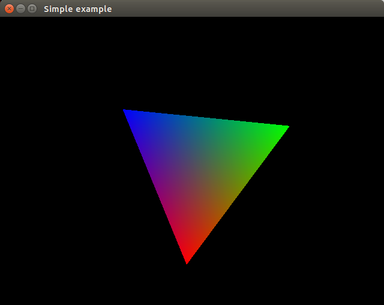

https://www.khronos.org/opengl/wiki/Getting_Started#Tutorials_and_How_To_Guides
Я изучаю OpenGL по урокам https://learnopengl.com/, которые используют современный OpenGL. (2017 год)
Личный cайт автора, на котором тоже много интересного - https://joeydevries.com/#homeПеревод части уроков на Хабре: https://habrahabr.ru/post/310790/
Еще одни уроки: 1 https://open.gl/introduction
2 http://antongerdelan.net/opengl/vertexbuffers.html
3 http://www.opengl-tutorial.org/
4 https://triplepointfive.github.io/ogltutor/
5 http://ogldev.atspace.co.uk/Для того чтобы начать изучать OpenGL по урокам https://learnopengl.com/ надо установить две библиотеки - GLFW и GLAD.
Я использую IDE CLion на OS Ubuntu 14.04.
CLion для подключения библиотек и компиляции использует CMake, поэтому нужно написать CMakeLists.txt, а готового решения я не нашел, поэтому для тех у кого возникла такая же проблема я выкладываю свой путь решения.
GLFW http://www.glfw.org/download.html
http://steps3d.narod.ru/tutorials/glfw-tutorial.html
Компилирование библиотеки из исходников под Linux:
http://www.glfw.org/docs/latest/compile.html
Разархиврировать, перейти в терминале в эту директорию.
Установить зависимости:
sudo apt-get install xorg-dev
cmake
Создать поддиректорию Build:
mkdir glfw-build
cd glfw-build
cmake ~/game/glfw-3.2.1
make
sudo make install
Вывод:
Install configuration: ""
-- Installing: /usr/local/include/GLFW
-- Installing: /usr/local/include/GLFW/glfw3native.h
-- Installing: /usr/local/include/GLFW/glfw3.h
-- Installing: /usr/local/lib/cmake/glfw3/glfw3Config.cmake
-- Installing: /usr/local/lib/cmake/glfw3/glfw3ConfigVersion.cmake
-- Installing: /usr/local/lib/cmake/glfw3/glfw3Targets.cmake
-- Installing: /usr/local/lib/cmake/glfw3/glfw3Targets-noconfig.cmake
-- Installing: /usr/local/lib/pkgconfig/glfw3.pc
-- Installing: /usr/local/lib/libglfw3.a
Создание тестовой программы:
http://www.glfw.org/docs/3.0/quick.html
#include <GLFW/glfw3.h>
#include <stdlib.h>
#include <stdio.h>
static void error_callback(int error, const char* description)
{
fputs(description, stderr);
}
static void key_callback(GLFWwindow* window, int key, int scancode, int
action, int mods)
{
if (key == GLFW_KEY_ESCAPE && action ==
GLFW_PRESS)
glfwSetWindowShouldClose(window, GL_TRUE);
}
int main(void)
{
GLFWwindow* window;
glfwSetErrorCallback(error_callback);
if (!glfwInit())
exit(EXIT_FAILURE);
window = glfwCreateWindow(640, 480, "Simple example",
NULL, NULL);
if (!window)
{
glfwTerminate();
exit(EXIT_FAILURE);
}
glfwMakeContextCurrent(window);
glfwSetKeyCallback(window, key_callback);
while (!glfwWindowShouldClose(window))
{
float ratio;
int width, height;
glfwGetFramebufferSize(window, &width, &height);
ratio = width / (float)
height;
glViewport(0, 0, width,
height);
glClear(GL_COLOR_BUFFER_BIT);
glMatrixMode(GL_PROJECTION);
glLoadIdentity();
glOrtho(-ratio, ratio, -1.f,
1.f, 1.f, -1.f);
glMatrixMode(GL_MODELVIEW);
glLoadIdentity();
glRotatef((float)
glfwGetTime() * 50.f, 0.f, 0.f, 1.f);
glBegin(GL_TRIANGLES);
glColor3f(1.f, 0.f, 0.f);
glVertex3f(-0.6f, -0.4f,
0.f);
glColor3f(0.f, 1.f, 0.f);
glVertex3f(0.6f, -0.4f, 0.f);
glColor3f(0.f, 0.f, 1.f);
glVertex3f(0.f, 0.6f, 0.f);
glEnd();
glfwSwapBuffers(window);
glfwPollEvents();
}
glfwDestroyWindow(window);
glfwTerminate();
exit(EXIT_SUCCESS);
} Компилирование:
g++ -std=c++11 -c test_gl.cpp
g++ test_gl.o -o test_gl.exec -lGL -lGLU -lglfw3 -lX11 -lXxf86vm
-lXrandr -lpthread -lXi -ldl -lXinerama -lXcursor
Вывод:
http://eax.me/opengl-simple-project/
Директорию с GLFW копирую в папку проекта и переименовываю в glfw.
Статическая линковка библиотеки GLFW.
Текст файла CMakeLists.txt:
cmake_minimum_required(VERSION 3.8)
project(untitled)
set(CMAKE_CXX_STANDARD 11)
find_package(OpenGL REQUIRED)
add_subdirectory(glfw)
include_directories(glfw/include) # lbhtrnjhbz
set(CMAKE_CXX_FLAGS "${CMAKE_CXX_FLAGS} -O2 -Wall -Wextra -std=c++11")
set(SOURCE_FILES main.cpp)
add_executable(untitled ${SOURCE_FILES})
target_link_libraries(untitled glfw ${GLFW_LIBRARIES} ${OPENGL_LIBRARY})
Таже самая программа компилирутеся в IDE CLion.
cmake_minimum_required(VERSION 3.8)
project(untitled)
set(CMAKE_CXX_STANDARD 11)
find_package(OpenGL REQUIRED)
add_subdirectory(glfw)
include_directories(glfw/include)
include_directories(glad/include)
set(SOURCE_LIB glad.cpp)
add_library(glad STATIC ${SOURCE_LIB})
set(CMAKE_CXX_FLAGS "${CMAKE_CXX_FLAGS} -O2 -Wall -Wextra -std=c++11")
set(SOURCE_FILES main.cpp glad.cpp)
add_executable(untitled ${SOURCE_FILES})
target_link_libraries(untitled glad glfw ${GLFW_LIBRARIES}
${OPENGL_LIBRARY})
NeHe современные http://nehe.gamedev.net/
http://www.codersource.net/2011/02/06/a-simple-2d-game-with-opengl-ball-with-bat/
UDEMY https://www.udemy.com/opengl-tutorials/
Lazy Foo http://lazyfoo.net/tutorials/OpenGL/
Tutorials http://3dcpptutorials.sk/index.php?id=14
http://www.falloutsoftware.com/quick-start.html
https://www.youtube.com/watch?v=6Miai_t_ksw
http://www3.ntu.edu.sg/home/ehchua/programming/opengl/cg_introduction.html
http://www.codersource.net/2011/01/27/displaying-text-opengl-tutorial-5/
Game https://www.youtube.com/watch?v=sLSbmHTfvv4
http://milantimko.info/index.php?page=articles&category=projects&article=02
Game 2 https://www.youtube.com/playlist?list=PLRIWtICgwaX0u7Rf9zkZhLoLuZVfUksDP
sdl openGL+SDL